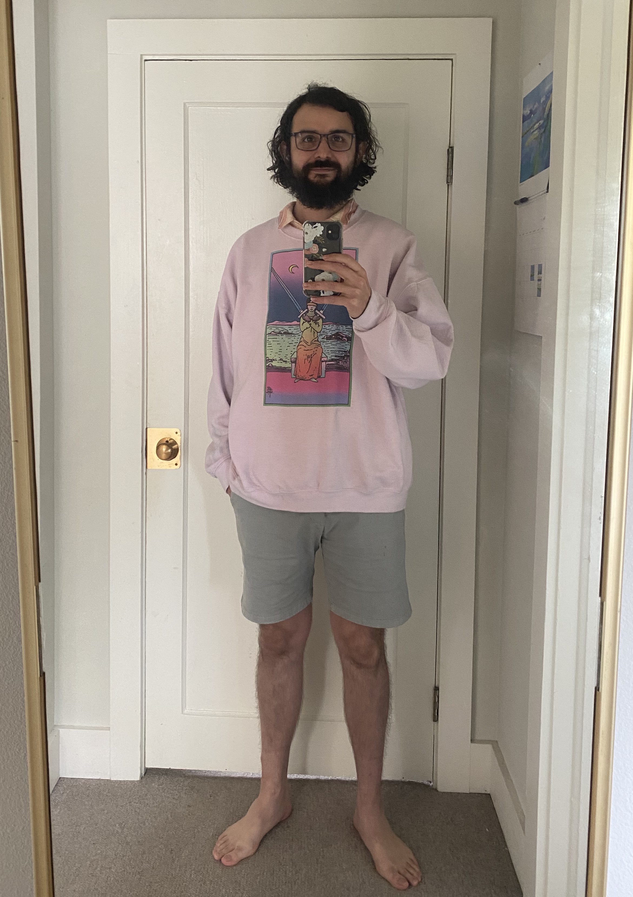

Portfolio
of Kyle Kay-Perez
Projects week 1
- Boring blog and boring lecture
- Trying out bootstrap
- Animal shelter
Introductory HTML projects
- Hello world
- Goodbye
- My First Webpage
- This webpage color coordinated to my outfit!
- Check back here for more work, will update monthly!
An HTML and CSS project: As far as lessons and understanding in a week of coding, I really came into my own with CSS on Boring-Blog. I had spent a morning learning it and my reach goal was creating quarter circles that interacted with the page correctly. My partner and I spent a good afternoon making everything interact appropriately. also contains column practice, box model practice and a pairs resume.
Made a vacation website for Valencia testing out a few of the bootstrap classes.
An HTML, CSS, and Markdown project: This is an experience with cascading.
Basic HTML project declaring our presence in the online world.
An HTML, CSS, and Markdown project: Has pair work with Sho Newman and Danielle Trent. Contains a webpage detailing someone's favorite things, a vegan blog, and in the repository a readme and dog website (popo).
About Me
Background
- College
Job experience
- Operations Coordinator at Ronald McDonald House Charities of Oregon and SW Washington from July 2018 - May 2021
- Bar Manager and Show Booker at Local Celebrity from June 2017 - Jan 2018
Illinois State University: Bachelors of Sciences Psychology
At RMHC I was in charge of maintaining the buildings, contractors, vendors and their contracts, and managed projects for additions, improvemenets, and restoration. A joy of a job and a healthy experience.
My best friend and I opened this bar together. We had been doing a live music video podcast together and wanted to transition that experience to a music venue. I learned how to bartend and run a bartending staff and kitchen, as well as did regular show booking and promotion. Lot of work, but yet again, a joy. Did you know you need dance insurance for music venues? I do.
Hobbies, Interests, and Skills
 In a pre-covid world I was a social being. I enjoy biking, D&D, attending shows and playing music, and video games. I am passionate about environmental concerns and the overlap between economic and social justice. I value my ability to work within the learn/test/edit cycle in my work and I'm not particularly discouraged by scope, failure, or criticism. I'm not beyond anxiety, and I'm not a beacon of joy every day of my life, but I do try to treat people kindly even when I'm not in a great place. Those skills have allowed me to be successful personally and professionally the last few years of my life.
In a pre-covid world I was a social being. I enjoy biking, D&D, attending shows and playing music, and video games. I am passionate about environmental concerns and the overlap between economic and social justice. I value my ability to work within the learn/test/edit cycle in my work and I'm not particularly discouraged by scope, failure, or criticism. I'm not beyond anxiety, and I'm not a beacon of joy every day of my life, but I do try to treat people kindly even when I'm not in a great place. Those skills have allowed me to be successful personally and professionally the last few years of my life.